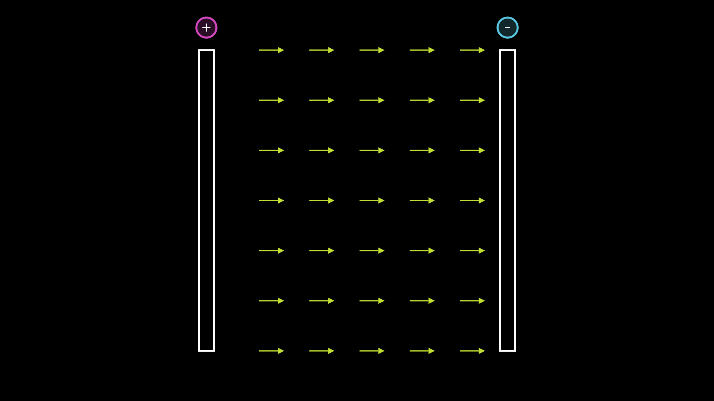

$$\newcommand{\dv}[1]{ \frac{\textrm{d}}{\textrm{d}#1} }$$
$$\newcommand{\de}{\, \textrm{d}} $$
$$\newcommand{\gr}[1]{ \textbf{#1} } $$
Vector fields basics
We consider a vector field, let´s say a bidimensional velocity field of a continuum fluid. We can express in in different notations: in one way we can write
$$\mathbf{u}= \vec u= u \hat e_1 + v \hat e_2 = \begin{bmatrix} u & v \end{bmatrix} $$
where $$ (e_1 \; e_2) $$ is an ortho-normal (ON) basis for the plane $$\mathbb{R}^2$$ .
--FIRST VIDEO FLOW MOTION--
https://user-images.githubusercontent.com/58366614/174284390-dcf0235c-e2b6-44be-af77-f3daf94a649d.mp4
Electric field in a capacitor
We consider a capacitor composed by two parallel ( and infinitely extended) plates.
On the left with positive charge and on the right with negative charge.
Between the two plates there will be a uniform electric field \gr{E}, directed from left to right.

Now we consider a square domain omega, in particular the integral of the flux through all its boundary: we can see that the faces normal to the electric field are giving
respectively a negative and positive contribute, but equal in absolute value, because are equal in extension and the electric field is constant everywhere in the domain.
The resulting flux for those two is then zero. It is zero also for each of the two sides that are parallel to the flux, since the scalar product of their normal vector with the electric field is zero.
$$ \hat{n} \cdot \cic{E}=0$$
Mass balance
Now we consider an arbitrary domain $$ \Omega $$
--VIDEO 2: arbitrary omegas--
Keeping the case of the fluid flow, we already know by conservation law that the total amount of mass must be conserved if nothing is added or removed inside the domain:
$$ \dv{t} \int \rho (x,y) \de x \de y=0 $$
We can intuitively see that the total amount of mass inside a 2D closed system (no flux through boundaries) varies by the surface integral of the source function $$f(x,y)$$ :
$$ \dv{t} \underbrace{\int_{\Omega} \rho(x,y) \de x \de y}_{total\, mass} = \underbrace{\int_{\Omega} f(x,y) \de x \de y}_{resulting\, outward \,flux} $$
This means that the temporal variation of the mass inside the domain is given by the average of the source function in the domain:
--ATTACH Video: flux tangential to the boundary or approaching with 0 speed or negative source function on boundary --
If we consider a non-zero flux through boundaries it becomes:
$$ \dv{t} \int_{\Omega} \rho(x,y) \de x \de y = \int_{\Omega} f(x,y) \de x \de y - \oint_{\partial \Omega} \vec u \cdot \hat n \de l $$
where the last term is the flux integral across the domain boundary
So, we have seen that the contributes to the average density inside an arbitrary domain are given by:
* Flux, positive outward (-)
* Source function (+)
This idea can be extended for arbitrarily small domain! this leads to..... ---FINISH--
1D case:
Let´s consider a 1D vector field, in particular the "mass inside dl": if dl tends to zero, we can write $$ \de m= \rho \de x $$ .
For simplicity we suppose that the source function is zero everywhere: $$f(x)=0$$
The resulting variation of density is given by the difference of speed between the left boundary (a point) and the right boundary.
If $$ \de x \to 0$$ this difference will be a derivative:
$$ \dv{t} m = \dv{t} \rho \de x = u(x+ \de x) - u(x) \Rightarrow \dv{t} \rho = \frac{u(x+ \de x) - u(x)}{\de x}= \dv{x} u(x) $$
So we see how the time variation of mass in this case is the derivative of the velocity field: in dimension higher than one this concept is generalized by the \gr{divergence}
2D case:
With the same fashion we compute:
$$ \dv{t} \rho = \rho \Big[ u(x,y) - u(x+ \de x,y) \Big] + \rho \Big[ v(x,y) - v(x,y+ \de y) \Big] $$
(CHECK $ \rho$ !!)
and for $ \de x , \de y \to 0 $ it becomes:
$$ \dv{t} \rho = - \rho \Big( \dv{x} u(x,y) + \dv{y} v(x,y) \Big) $$
The divergence
The last equation express the divergence of the velocity vector field $$\mathbf{u}= \vec u= u \hat e_1 + v \hat e_2 = \begin{bmatrix} u & v \end{bmatrix} $$ in 2D.
The divergence of a vector field is defined as the scalar product with the gradient operator: in 2D is defined in the following way
$$ \textrm{div} \, \vec u = \nabla \cdot \vec u = \dv{x} u(x,y) + \dv{y} v(x,y) $$
Indeed "unrolling" the divergence operator leads to:
$$ \nabla \cdot \vec u = \begin{bmatrix} \dv{x} & \dv{y} \end{bmatrix} \cdot \begin{bmatrix} u & v \end{bmatrix}= \Big( \dv{x} u(x,y) + \dv{y} v(x,y) \Big) $$
-- video divergence--
The divergence theorem from Gauss´ theorem
It is possible to obtain the divergence theorem as a generalization of Gauss´ one in case of vector fields (instead of scalar field)
Gauss´ theorem relates a volume integral to a surface integral:
$$ \int_\Omega \frac{\partial Q}{\partial x_i} \de V = \int Q \de A $$
A physical interpretation can be done by putting Q as electric field E: indeed this will lead to the well known expression
$$ \int_\Omega \frac{\rho}{\epsilon_0} \de V = \int E \de A $$
where the RHS term represent the flux of the electric field through the boundary of domain $$\Omega$$ and the LHS represent the integral of the charge density in the volume, i.e. the total amount of charge contained into the domain $$\Omega$$.
This equation is obtained substituting the 1st Maxwell law into the LHS integral, by substituting:
$$ \nabla \cdot E = \frac{\rho}{\epsilon_0} $$
Sink and sources
Every point in the domain can behave as "source" (+) or "sink" (-): this behavior is described by the source function $$f(x,y)$$ being positive or negative.
Please, Note: the value of the source function must not be confused with the value of the divergence! Indeed, the divergence consider only the variation of the speed field around a point, but doesn´t give information whether mass is generated(-removed) or compressed(-decompressed)! Assuming the more general case of compressible flow, also the density variation in a point is related with the divergence of the field. Let´s see this more in detail:
--video compression-decompression-with sources-- in different points different behaviors.
Continuity equation
To keep track of the contributions of both the source function and the behavior of neighbor fluid particles, we have just to sum up those, and this leads to the \gr{continuity equation}.
$$ \dv{t} \rho(x,y) = f(x,y) -\nabla \cdot ( \rho \vec u(x,y) ) $$
In case of incompressible fluid, we know that $$ \rho=\textrm{cost.} $$
This leads directly to
$$ \nabla \cdot ( \rho \vec u(x,y) )= f(x,y) $$
that intuitively means that the divergence of the velocity field is given only by how much fluid is "generated-absorbed" in that point.
--VIDEO WITH CHEMICALS REACTIONS AND COMPOUNDS DENSITIES VARIATIONS--
MY STUFF
$$\mathbf{u}= \vec u= u \hat e_1 + v \hat e_2 = \begin{bmatrix} u & v \end{bmatrix} $$